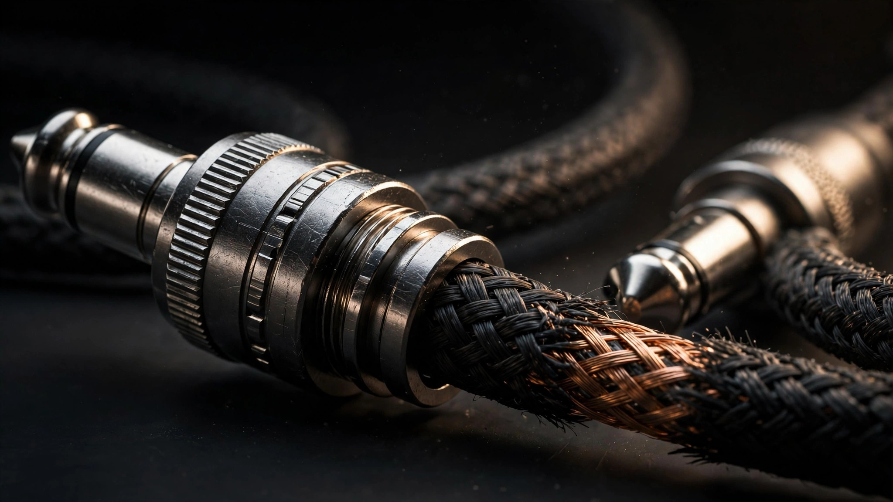

The NAMM show floor, back around 2016
Every story like this starts with being in the right room. Back around 2016, I was living in Los Angeles and working the NAMM show floor, doing what you do at NAMM: shaking hands, talking gear, following the noise. Somewhere between the drum demos and the pedal walls, I ran into Chromaleaf, a small company making guitar cables, and we just clicked.
I love that this is how it happened. Not a job board. Not a recruiter. A conversation on a loud show floor with people who cared about the same things I cared about. That is how the music business actually works, and it is how the best chapters of a career start. You show up, you talk shop, and one handshake turns into a whole era.
The customer who became their loudest fan
My own words for myself are "rock star wannabe dad that is a business professional." Most chapters of my life only let me be one of those at a time. Chromaleaf let me be all three at once.
Think about that for a second. A cable is the least glamorous thing in the signal chain. Nobody tattoos a cable brand on their arm. Nobody waits in line at midnight for a cable drop. But every guitarist on earth has a cable horror story, the one that died mid-solo, the one that crackled during the quiet part, the one that turned a $3,000 rig into a very expensive paperweight. A company that prevents that nightmare is not selling a commodity. They are selling peace of mind to people who hear the difference, and trust me, they hear everything.
This is where my three worlds collided. The tech nerd in me geeked out over capacitance, shielding, and connector tolerances. The salesman in me studied how they sold a product that actually solved a real problem. And the rock star wannabe in me, the guy who has seen Aerosmith 27 times and plays in his own band, got to talk tone with people who care about tone. I never had to fake enthusiasm. The enthusiasm was the whole point.
And here is the part that still gets me. They did not just sell me a cable. Chromaleaf custom-built cables for me, personally, built so I could chase Joe Perry's sound. Joe Perry is my idol. I have seen Aerosmith 27 times, I have stood in arenas watching that man make a Les Paul talk, and these folks handed me cables built to help me shred like him. You do not forget a company that builds you the tools to chase your hero. That is the heart of this whole story, and it is why I will always go to bat for small music companies. Somebody once went to bat for me, with a soldering iron.
Musicians can smell a fake from the parking lot
Here is the first thing that world taught me: musicians are the toughest buyers on the planet, and they should be. A guitarist will spend forty minutes A/B testing two cables that look identical to everyone else in the room. They will argue about oxygen-free copper the way ERP consultants argue about chart of accounts design. They are detail-obsessed, brand-loyal, and allergic to hype.
So you cannot sell them with a script. You sell them by knowing your stuff cold and admitting what you do not know. The fastest way to lose a musician is to bluff about gear. The fastest way to win one is to say, "I have not tried that pedal with this cable, let me find out," and then actually find out. That honesty built more repeat business than any discount ever did.
Small music companies live or die on this. Your customer base is a community, not a territory. They talk to each other. They post clips. They know which shop owner actually plays and which one just works the register. If you want to grow a music business, start by being the person they would call at 10 PM before a gig, not the person with the slickest ad. 
The tech under the hood matters more than the logo on the box
The second lesson was pure tech nerd joy. A guitar cable is applied physics: capacitance rolls off high end, shielding rejects interference, strain relief determines whether the thing survives a year of gigs or a week. Once I understood the engineering, I found myself explaining to other players in plain English why one cable cost more than another, and musicians respected that. Nobody likes being upsold. Everybody likes being educated.
This is the exact same muscle I use in ERP sales today. SAP Business One and Odoo are not exciting to most people either. But when you can explain the machinery underneath, in language the buyer actually speaks, the sale stops feeling like a sale. It feels like a consult. Chromaleaf taught me that the boring middle of the stack, the plumbing, the connectors, the integration layer, is where trust is built. Flashy gets attention. Plumbing gets renewals.
The full circle: I sold them SAP Business One
Now here is the part that makes this story mine and nobody else's. Years after the cables, after the custom builds, after chasing Joe Perry's tone through a Chromaleaf cable, I came back to Chromaleaf in a completely different role. I sold them SAP Business One to run their business.
Read that again. They built me cables to chase my hero's sound. Then I sold them the ERP system to run the whole operation. My music world and my tech world did not just overlap, they shook hands and signed a contract. That is the fusion I am always talking about: tech, work, and passion, all mixed into one thing. It does not get more real than that.
And honestly, it made me better at my job. Selling ERP to a company whose shop floor you have stood on, whose product you have gigged with, whose people built you something with their own hands, that is not a cold sale. That is a relationship with a purchase order attached. Every ERP deal I have worked since, I have tried to bring that same energy: know the business like you work there, because in a way, you do.
Small music companies grow the same way bands do
The last lesson is the one I keep coming back to. A small music company grows like a band grows: one true fan at a time. You do not need a stadium. You need fifty players who will not shut up about your product, and you earn them the same way a band earns a crowd, by showing up, sounding good, and treating the opener with respect.
That means answering the phone. It means the owner is at the counter on Saturdays. It means your return policy is generous because you remember what it felt like to buy the wrong thing on a tight budget. Chromaleaf was not the biggest name in the game, and that was fine, because the players who found them stayed with them. Retention beats acquisition in music retail the same way it beats it everywhere else. It just matters more, because the community is smaller and the memories are longer.
Why this still drives what I do
People ask why an ERP sales guy writes about guitar cables. Because it is the same job. Whether I am helping a manufacturer pick SAP Business One or helping a small music company figure out its next move, the work is identical: learn the craft, respect the buyer, explain the machinery, and show up like you mean it.
The Chromaleaf chapter mixed my love of tech, my work in sales, and my passion for music into one thing, and I have been chasing that feeling ever since. It is the reason I light up when a small music company asks for help. I am not a vendor to them. I am a fellow traveler who happens to know how the business side works.
So here is my pitch, and it is the same one I would make to a guitarist choosing a cable: do not buy the hype. Buy the thing built by people who understand what you do. Then go make some noise.
Frequently asked questions
What is Chromaleaf?
Chromaleaf is a small guitar cable company I discovered on the NAMM show floor back around 2016, while I was living in Los Angeles and networking the show. They custom-built cables for me personally, made so I could chase Joe Perry's sound. Years later, I sold them SAP Business One to run their business.
Did you really sell them SAP Business One?
Yes. That is the full-circle part of the story. They built me custom cables to chase my hero's tone, and then I came back and sold them the ERP system to run the operation. Music world, tech world, one story.
What is the biggest mistake small music companies make?
Trying to out-spend bigger competitors on advertising instead of out-serving them on trust. In the music world, the community decides who wins. Fifty loyal players beat five thousand impressions every time.
What does a guitar cable have to do with ERP software?
Both are "boring middle of the stack" products that buyers only appreciate once someone explains the machinery. The skill is the same: translate engineering into plain English, respect the buyer's expertise, and never bluff.
I run a small music company. Where do I start growing?
Start with the customers you already have. Answer the phone, be at the counter, make returns painless, and become the person players recommend to each other. Then build the boring operational backbone, inventory, accounting, follow-up, so growth does not break you. That second part is where I can help.